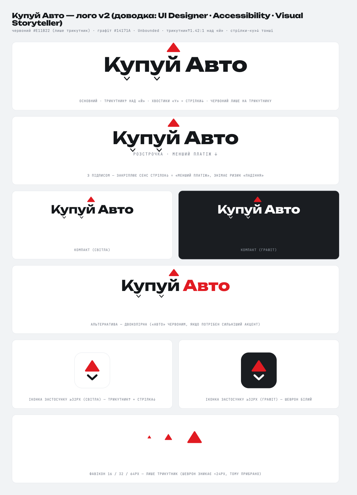
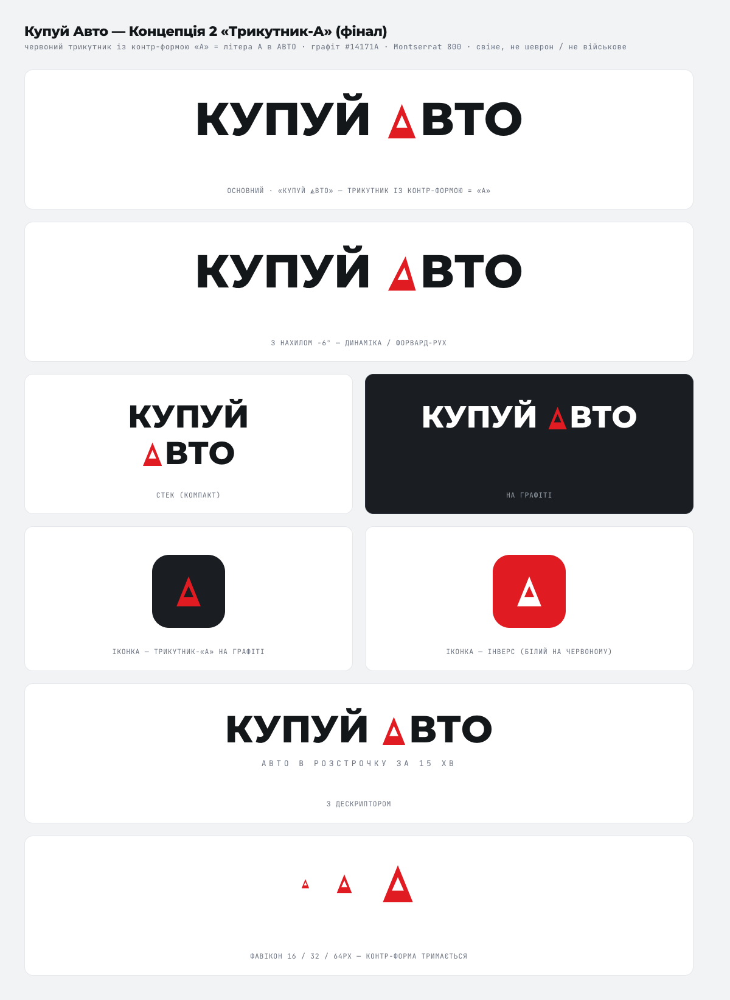
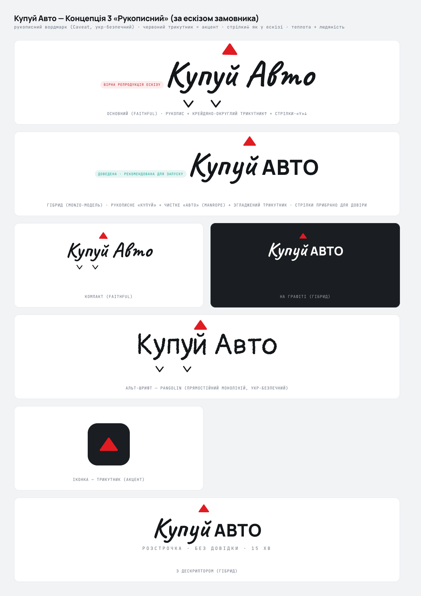

Три напрямки знака для «Купуй Авто». Кожен побудований навколо червоного трикутника як акценту. Натисніть «Відкрити» під концепцією, щоб роздивитися всі варіанти застосування (світла/темна тема, іконка, фавікон).


